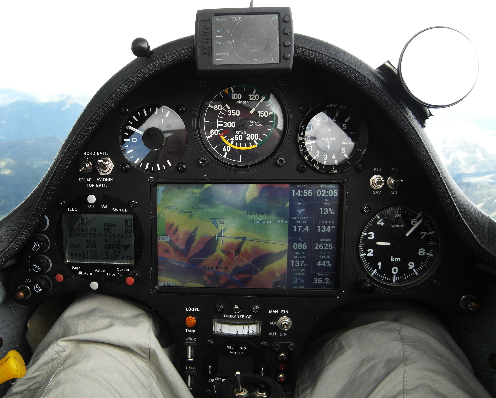

The Openvario Flight Computer
The flight computer device is the main project of OpenVario. The objective of this project is the development of a panel mounted glide computer with a sunlight readable display, that can be non-commercially built by individuals or gliding clubs for rather small money. Interfaces allow integration of sensors and extensions at a later time.
History

It all started with two prototypes developed and built by Akaflieg Graz (www.akaflieg.at). The protoypes gained some interest and a small team of developers started to work from there. The flight computer combines a modern computing platform running an embedded Linux operating system, a sensor board with recent sensor technology, and an interface board for rich connectivity contained in an aluminium housing. A seven inch sunlight-readable TFT display offers twice the display area of the venerable Dell Streak 5 and provides all required information at a glance. User interaction is by stick mounted remote, touchscreen, dual rotary encoder or trackball.
Architecture
The flight computer's architecture consists of the following components:
- Mechanical (Housing, Tube Connectors)
- Hardware Architecture (Electronics)
- OpenVario Protocol (NMEA-sentences)
- Software Architecture (Boot System, Operating System, Software components)
Technical Data
You can find the technical data of the Flight Computer's standard implementation here. Please note that you're own implementation might be different (For example, if your panel requires different dimensions you could go for another housing or screen. Have a look on the variants being realized until now. After all that's the beauty of the project's openness).
Build one yourself
The Openvario Flight Computer is meant to be built in an hobbyist environment. This is true for both mechanical and electronic components. However there are some basic skills required. For example you need to be able to solder SMD components or mill aluminium plates. If you think you can manage, and want to build one device, check out how to build the Flight Computer.